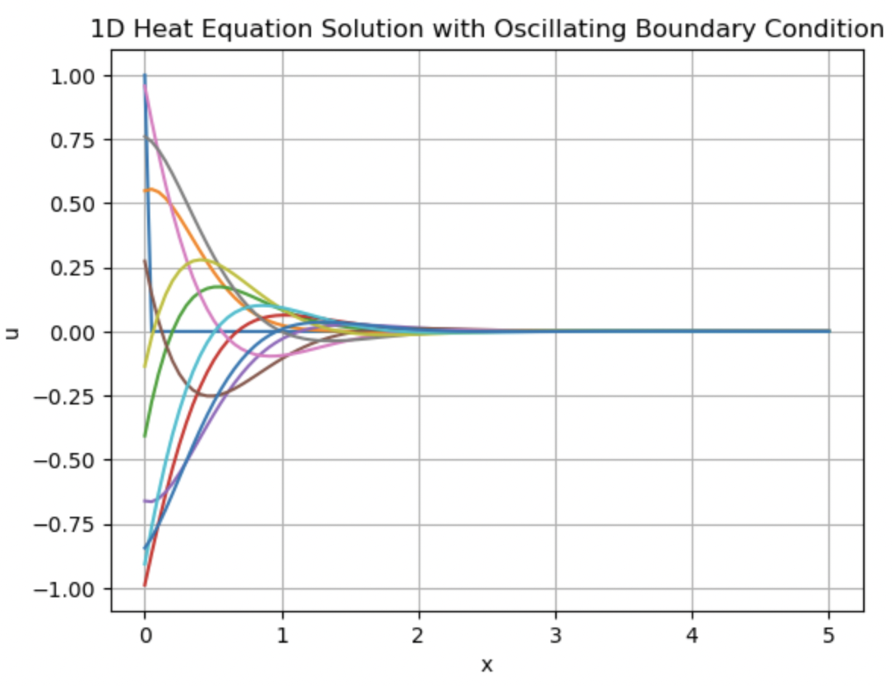

11 The wine cellar problem
This chapter, we will study an example of a PDE model for heat transport, and then use it to inform ourselves on a typical physical problem.
We are interested in finding the optimal depth for a storage cellar that might be used to house wine. Based on our previous discussions, if we assume that the temperature beneath the ground is given by \(T(x, t)\), with \(x \geq 0\) below the surface, then the temperature is governed by \[ \frac{\partial T}{\partial t} = \kappa \frac{\partial^2 T}{\partial x^2}, \] for \(x \geq 0\). This is a highly averaged model, where we assume there is no transport of heat into the horizontal plane.
We shall also assume that the surface temperature is modelled by an oscillatory function. On the assumption that the temperature has been normalised so that \(T = 0\) corresponds to the mean temperature of the surface, then we have \[ T(x = 0, t) = A \cos(\omega t). \] The wavelength is then \(2\pi/\omega\) which we can set to one year. So \(\omega = 1/(2\pi) \text{ yr}^{-1}\).
In addition, we expect that the temperature should not be singular far beneath (in particular we expect it to get colder as we go further underground), at least on a scale where we are not approaching the centre of the Earth! Thus it is sensible that \[ |T(x, t)| \text{ is bounded as $x \to \infty$}. \]
You will not require an initial condition of the discussions below.
11.1 Numerical solutions
An example code that uses first-order explicit Euler timestepping is given in chapter11-winecellar on the lectures coding folder. A typical numerical output is given here:

11.2 Analytical solution
Before we begin, it is useful for the purposes of manipulation to write the boundary condition as \[ T(0, t) = A \Re (e^{i\omega t}) = A\Re(\cos (\omega t) + i \sin(\omega t)) = A\cos(\omega t). \] This has the advantage that we can manipulate exponentials much more easily.
To solve the problem analytically, we attempt a solution method called separation of variables. Let \[ T(x, t) = G(t) H(x). \] Substitution into the PDE gives \[ G'(t) H(x) = \kappa G(t) H''(x), \] and we attempt to separate the functions of \(t\) to one side and the functions of \(x\) to the other. \[ \frac{G'(t)}{G'(t)} = \kappa \frac{H''(x)}{H(x)} \] Now in order for two completely different functions dependent on two completely different independent variables to be equal in this way, then this implies that both sides must be equal to a constant. So we have \[ \begin{aligned} G' &= \lambda G \\ H'' &= \lambda \kappa H. \end{aligned} \] Therefore \(G = \mathrm{const} \times e^{\lambda t}\). Because of the boundary conditions that would require \(T = A e^{i\omega t}\), you can check that \(\lambda = 0\) and \(\lambda\) real are both impossible. The only way to satisfy the boundary conditions is if \(\lambda = i\omega\). So we conclude that \[ G(t) = \mathrm{const.} \times e^{i\omega t}. \] To solve \[ H'' = (i\omega/\kappa) H, \] you can attempt the substitution \(H(x) = e^{rx}\) and solve the resultant equation for the characteristic polynomial in \(r\). You will do this in the problem set, and obtain \[ r = \pm \sqrt{i} \sqrt{\omega/\kappa} = \pm \sqrt{\omega/\kappa} \frac{1 + i}{\sqrt{2}}. \] Therefore \[ H(x) = C_1 e^{\sqrt{\omega/(2\kappa)}x}e^{\sqrt{\omega/(2\kappa)}ix}+ C_2 e^{-\sqrt{\omega/(2\kappa)}x}e^{-\sqrt{\omega/(2\kappa)}ix}. \] The first solution should be discarded since it blows up as \(x \to \infty\).
Finally, we conclude that the solution is given by \[ T = e^{i\omega t} e^{-\sqrt{\omega/(2\kappa)}x}e^{-\sqrt{\omega/(2\kappa)}ix}. \] Move the imaginary arguments together: \[ T = \text{const.} \times e^{-\sqrt{\omega/(2\kappa)}x}e^{i(-\sqrt{\omega/(2\kappa)}x + \omega t)}. \] Now we take the real part, giving \[ T = A e^{-\sqrt{\omega/(2\kappa)}x} \cos\left(-\sqrt{\omega/(2\kappa)}x + \omega t\right), \tag{11.1}\] and we see that having set the constant to \(A\) the solution indeed satisfies \(T(0, t) = A\cos(\omega t)\).
11.3 Selection of optimal depth
The optimal depth of the wine cellar is selected by taking the depth to be such that the cosine is completely out of phase with the surface solution. This means that \[ -\sqrt{\omega/(2\kappa)}x + \omega t + \pi = \omega t. \] You can substitute other multiples of \(\pi\). Thus we have \[ x = \pi \sqrt{\frac{2\kappa}{\omega}}. \] We can estimate the numbers as follows. Converting from 1 year to seconds yields \[ \omega = \frac{2\pi}{3.15 \times 10^7 \mathrm{s}}. \] Also, the \(\kappa\) for dry soil is around \(0.002 \mathrm{cm}^2/\mathrm{s}\).
Putting these numbers in yields \[ x \approx 445 \mathrm{cm} = 4.45 \mathrm{m}. \]